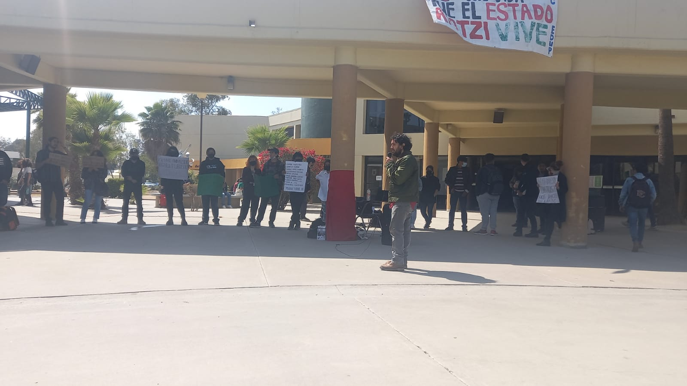

¿Qué es el FRESCO?
El Frente Estudiantil de Cooperación es una organización estudiantil amplia cuyo propósito es concientizar, reunir y preparar a las y los estudiantes de Baja California para defender sus derechos ya ganadxos y conquistar los deseados. Fue fundado tras el Día del Estudiante (23 de mayo) 2022, día en que estudiantes y egresadas de UABC, ya con la participación de estudiantes de otras escuelas, se manifestaron por la gratuidad educativa, la democracia universitaria, el combate al machismo y otras exigencias. Conscientes de la necesidad de continuar organizándose y evitar la disolución que amenaza a los movimientos sociales, se propuso crear un grupo de redes sociales por donde comunicarnos. De ese grupo surgió nuestro Frente, que se rige democráticamente por la asamblea de las personas estudiantes y egresadas que lo integran.

¿Quién puede unirse?
Cualquier persona estudiante o egresada de cualquier institución educativa de cualquier parte de Baja California esta invitada a unirse al FRESCO. Solo se excluyen a personas con conductas antisociales o que estén al servicio de enemigos de las y los estudiantes. Realizamos diferentes actividades, asambleas, círculos de estudio y discusión, cineforos, manifestaciones, etc. Puedes unirte y proponer actividades que consideres ayudaran a la comunidad estudiantil. Cooperando entre estudiantes podemos resolver los problemas que nos aquejan. Estos problemas no han existido siempre ni tienen porque seguir existiendo si nos organizamos para resolverlos.
¡Únete al Frente Estudiantil de Cooperación, ayuda al desarrollo del movimiento estudiantil!